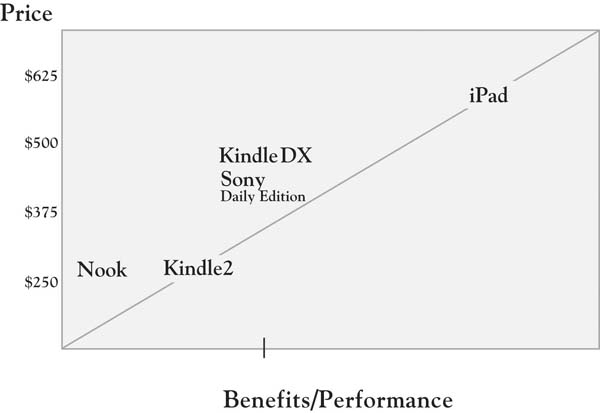

Kraft Foods’ Tang—the orange-flavored drink that Americans closely associate with astronauts and the space program—experienced 30% growth in 2009 in developing markets, including Asia, Latin America, and Eastern Europe.“Tang Gets a Second Rocket Ride” (2010). It is instructive to note how the firm has leveraged different kinds of value in achieving these results. In competing in any market, there is some basic value a brand must provide, including adequate distribution and certain levels of market awareness and understanding of the product. Other dimensions of value differentiate the product; in Tang’s case, it is a unique flavor and established brand equity. The company has new flavors, including mango variations in the Philippines and maracuja (passion fruit) in Brazil. As the brand reach was expanded, the company remained open to research and insight about unmet needs, and potentially yet-to-be-determined attributes. In China, they discovered both a strong belief that children’s hydration was important and required drinking a lot of water (up to 6 glasses a day) and that kids found water boring! Most significantly, though, they found a strong preference for single servings, leading to the development of single-serve powder sticks to address this unmet need. This new form of packaging was adopted in place of pitcher packs, which Chinese moms found to provide nonvalue (in being wasteful and expensive).
At this point in the book, we have established the challenges of growing in the competitive marketplace today, introduced the 3-Circle model, and explored the basic concepts behind it. As reflected in the Tang example, we have also reinforced throughout that in any customer market, there are different dimensions of customer value that can play different strategic roles for the firm. Different strategy and customer value frameworks over the past 30 years have identified categories of value in disparate areas of the literature. Cutting across those frameworksKano (1995); Kuo (2004). See also Gale (1994) and the previously cited works of Kim and Mauborgne (1997, 2005) and Levitt (1980). and adding unique insight around nonvalue, we can summarize these categories as follows:
There are three kinds of nonvalued attributes. Surprisingly, very important growth implications emerge from considering different attributes that are currently not valued by customers.
In short, experience has shown that there is significant insight in recognizing these different categories of value in developing growth strategy. But what is needed is a way to simultaneously represent all of these categories of value in a manner that can be easily taught within the organization in order to get team members most quickly focused on the important dimensions of growth strategy.
We will describe a case study in order to illustrate how the 3-Circle framework provides the basis for integrating all of these value concepts in an actionable way.
The Amazon Kindle is the first-of-its-kind electronic reader that has now become the market standard. It allows for 1,500 book titles to be downloaded, voice or text reading, and utilizes a technology called “E Ink,” which looks like print on paper and is clearly visible both indoors and outdoors. The Apple iPad, its biggest new threat, was introduced as a “truly magical and revolutionary product” by Apple CEO Steve Jobs in a highly anticipated media event on January 27, 2010. Jobs described the iPad as a third category of device, somewhere in the middle between a laptop and a smart phone. He described a product that was superior for web browsing, e-mail, photo management, video viewing, and video game playing. But he further described the iPad as “standing on the shoulders” of Amazon and its Kindle product, which he felt had done a great job of pioneering the e-book reading functionality. The iPad is linked directly to the iBooks store, has navigation that replicates page turning with an actual book, provides quick access to tables of contents, and has flexibility with font size and type (see Figure 5.1 "iPad vs. Kindle: Comparing E-book Readers" for images of each device). Throughout the next section, we will use the iPad-versus-Kindle comparison as a basis for illustrating how value might be sorted in this category, using the comments of posters in a Wall Street Journal forum and other media sources.The analysis is based on media accounts, including “iPad vs. Kindle” (2010), “Apple’s iPad” (2010), and Espinoza (2010, March 1). The analysis here is framed as follows: What might be the basic elements of the growth strategy that Amazon might pursue with the Kindle in light of potential competition from Apples iPad? So our operational context statement here is, “Our goal is to determine how Amazon can defend and grow its Kindle sales by creating more value for established e-book readers than Apple’s iPad.”
Consider the ratings presented in Figure 5.2 "Established E-Book User Ratings:", which was developed based on early popular press and blog comparisons of the Kindle and the iPad. We will use the comparison of these two products, as well as other case examples, to illustrate how the dimensions of value in that developing market can be categorized.
Figure 5.1 iPad vs. Kindle: Comparing E-book Readers
Your job in the sorting exercise is to identify where these different dimensions of value belong in the 3-Circle framework. Figure 5.3 "Three Circles: The Outside View" presents the generic “outside view” of the 3 circles, showing 7 categories of value. As we have noted, the upper right-hand circle represents customer needs and values; the upper left-hand circle represents customer perception of the value that our company provides; and the bottom circle represents customer perception of the competitor’s value. Each of the 7 areas in the framework—indicated by the letters A through G—has strategic meaning. The task here is to sort the reasons or attributes that you have assessed into different areas.
Corresponding to the outside view of the 3-Circle model presented graphically in Figure 5.3 "Three Circles: The Outside View", Figure 5.4 "Sorting Rules: Identifying Categories of Value" provides some simple sorting rules. These rules identify how feedback from customers may be used to categorize particular attributes and benefits into the different areas of the model. The inputs for sorting are straightforward: a comparison of your firm’s rating or evaluation (by customers) versus the competitor, qualified by attribute importance.
Figure 5.2 Established E-Book User Ratings:* iPad vs. Kindle
Judgment of value is broken down by attribute or reason. Each individual attribute is sorted into Areas A through F based on the relative ratings given by customers (first column) qualified by our assessment of attribute importance. Area G is somewhat a unique area that explores attributes or attribute levels that might not currently exist in the market. We will later elaborate further on Area G. Figure 5.5 "Kindle vs. iPad: Sorted Value" provides a graphical representation of the data in Figure 5.2 "Established E-Book User Ratings:".
Figure 5.3 Three Circles: The Outside View
Figure 5.4 Sorting Rules: Identifying Categories of Value
Figure 5.5 Kindle vs. iPad: Sorted Value
The iPad is an improved netbook, but it won’t replace our Kindle.
Jon Kamp, February 12, 2010
The first three areas of the model under consideration address attributes the firm has in common with their competitor and those on which there are competitive differences.
Area B: Points of parity. We begin with Area B because most contemporary discussions of customer value begin with the point that there are elements of value that are must haves, without which a firm cannot even compete. Area B captures the required, nondifferentiating attributes that are common to the competitors in the market. They are currently nondifferentiating.
Identifying Area B: Points of parity. In customer research, points of parity are at least moderately important attributes and benefits on which customers rate you and your competitor as basically the same.The phrases “points of parity” and (later) “points of difference” come from the work of Keller (2008). There is a sense of equivalence. In the most current Consumer Reports study of consumer perception of automotive brands, for example, Ford and Subaru were in a virtual dead heat for second place, with 22% and 21% of consumers rating them in the top three on safety, the most important attribute to consumers.“Most Important Factor” (2010, January). So in an evaluation of Ford versus Subaru, safety is a wash; that is, the two are not distinguishable on this dimension. The Kindle and the iPad have a number of basic characteristics in common—by way of description, they are both portable electronic devices that can be used for reading books and other material. One nondifferentiating element for which the two might be similarly rated would be online access to reading material—each provides access to various book titles and other media remotely—the iPad through wireless Internet access and the Kindle through a 3G network.
Areas A and C: Points of difference. This is the central definition of competitive advantage as perceived by customers. Very simply, Area A captures the value that we provide customers that (a) matters to them, and (b) is different than the value competitors provide. Area C, then, is essentially the competitive complement to Area A. On what important advantages does the competitor hang its hat?
Identifying Areas A and C. It is usually fairly easy to identify the attributes and benefits that go into Areas A and C. These attributes tend to stand out in customers’ minds. Area A attributes and benefits are those of high importance for which our firm rates as superior to the competition. Area C is the flip side—important attributes and benefits on which the competitor is rated as superior. Returning to the 2010 automobile data from Consumer Reports, it is no surprise that safety is the predominant Area A item for Volvo (73%) against every other brand in the market. In a direct comparison with Toyota, though, the Consumer Reports data suggest that Volvo’s Area A dominance of safety might be trumped by Toyota’s superior scores on leadership in quality, value, and environmental friendliness, all among the top five important attributes.
Users of e-book very clearly identify the trade-offs between the Kindle and the new iPad; these would be the key Area A and Area C attributes representing the “get” and “give” of each device. While the less sophisticated of the two devices, with far less functionality, the Kindle has a simplicity that is perceived to be a core strength—it focuses on reading, undistracted by e-mail, the web, and gaming opportunities:
When I want to disconnect and read, I can’t have distractions, and having a multifunction device has always been an avenue for distractions to me.Ali (2010).
When I want to read, I want undistracted reading. As it is I don’t have much time to do so, with an iPad, it just defeats the purpose.Ali (2010).
There are two other major points of difference for the Kindle, reflected in the Figure 5.2 "Established E-Book User Ratings:" ratings: much superior battery life (1 week vs. iPad’s 10 hours) and no monthly fee for Internet access, significantly reducing operating costs. Most significant, though, among e-book users may be the fact that the Kindle is easier on the eyes because of its E-Ink technology. In contrast, the iPad’s backlit screen presentation is believed to create eyestrain:
The iPad, unlike the rest of the e-book readers has a traditional backlit screen and it is more tiring to the eyes. I cannot imagine people taking it to the coffee shops to read for a long time.Javier (2010).
In all, we might summarize the Kindle’s points of difference around the phrase “focused reading experience.” The commentary of loyal Kindle users reflects a deep commitment to reading as an important lifestyle activity, and a devotion to the Kindle as a means of delivering content.
In contrast, there is some attention given to the iPad for its unique features (Area C). In the reading domain, two major points of difference for the iPad are its navigation and page-turning capabilities, as well as its full color feature, which enhances reading of color-rich media:
I’ve been waiting for a convenient way to read my collection of PDFs and Zinio magazines, as well as eBooks, and the iPad is just the ticket. As a long time user of eBooks (I had an original Rocket eBook, and have its successor, the eBookWise), the iPad definitely has my attention.Ali (2010).
The ratings in Figure 5.2 "Established E-Book User Ratings:" reflect these advantages, along with a couple of the more obvious iPad advantages, which predominantly focus on the wide range of applications for its iPhone (videos, games, photography). In fact, consumers who value this dimension look at the iPad as a “Kindle Killer”:
The iPad is a Kindle killer. No question about it. For about $200 more you get a device that goes way, way beyond the capabilities of a Kindle. Coupled with the Apple/iPod/iPhone/iTouch name recognition and the iPad is going to sell like crazy. Every kid in college is going to want an iPad.Ali (2010).
We can see that there is a segment of dedicated e-book readers who will cede the greater capability and applications benefit to iPad, but who will not find those features to be important. The Figure 5.2 "Established E-Book User Ratings:" analysis provides a fair accounting of the relative competitive position of each device, and the analysis is relatively straightforward. Areas D, E, F, and G take a bit more interpretation.
Areas D, E, and F represent the interesting and important space that is outside the customer’s circle, as we have defined it. In fact, it is usually not immediately obvious what factors that we categorize into these areas actually mean, because there are multiple meanings. An attribute or benefit is placed outside the customer’s circle may represent one of four cases:
Understanding these four distinctions is critical. This represents one layer of the analysis. But another critical part of the categorization is distinguishing whether this value that falls outside of the customer’s circle is a concern for (a) just our firm, which puts it in Area E; (b) just the competitor, which puts it in Area F; or (c) both firms, which puts it in Area D, also known as “the swamp.”This term comes from a client who described this area as a “swampy mess,” in that it could represent value that had grown up organically but was no longer of value to customers. Let us consider these categories in more detail:
Note that each of these four states could be firm-specific (Area E or F) or could be a problem, concern, or opportunity faced by all competitors (Area D) that simply has not been resolved.
The core definition of the value in Areas D, E, and F is that it is (a) deficient, (b) unimportant, or (c) not well known to the customer. Your ability to identify value that goes into these areas is dependent upon the method used. One approach that we have applied in the ratings in Figure 5.2 "Established E-Book User Ratings:" is to ask customers to evaluate each competitive option on each attribute or benefit as either meeting, exceeding, or falling below expectations. So deficiency or disequity would be captured by below-expectations ratings. Any ratings on attributes or benefits that are deemed of moderate or high importance should be explored in more detail. The best example in the Kindle-iPad case is the fact that, with a certain segment of diehard e-book readers, the iPad’s substantial capabilities in accessing other applications much like the iPad actually creates disequity, as noted earlier, by providing potential distractions from the reading experience.
An even more direct illustration of disutility or deficiency comes from Barnes & Noble’s initial e-book entry called Nook, introduced in the fall of 2009. The Nook’s positive points of difference are interesting—it replicates the Kindle’s E-Ink technology, but with a color touch screen, providing more intuitive navigation for those accustomed to touch-screen technology. The package deal for the Nook also includes a book-sharing feature, allowing users to borrow books from one another rather than buying the books separately. However, a BusinessWeek review captures a critical disequity for the Nook: “Amazon’s current-model Kindle 2 takes about three seconds from the moment you release the power button until you can start reading. On the Nook, it takes a minute and 50 seconds.”Jaroslovsky (2009, December 7). Page turning and navigation in the new Nook appear to be similarly sluggish.
Low attribute importance is also a reason why certain value dimensions may fall outside the customer’s circle. This is, of course, captured in the importance ratings using our simple method of asking for a low, medium, or high rating. It should be noted that there are more sophisticated ways to obtain importance ratings, as it may be difficult for customers to be completely objective in these ratings. The challenge with self-report measures, which capture customer estimates of importance directly, is that customers may often rate all attributes of high importance. The analyst will need to use some judgment here based on the traditional meaning of importance as well as the stage of the life cycle in which this attribute might be categorized (see Chapter 8 "Dynamic Aspects of Markets" on dynamics). For example, once many battery manufacturers had adopted a self-testing capability for household batteries, it became clear, over time, that this was not a product benefit that consumers valued. Crystal Pepsi (a clear cola) is another example of an attempt to create a differentiating attribute that failed because it held no value for consumers.
Finally, certain attributes or benefits may not be known to customers. These attributes reveal themselves in discussions with customers. When you excitedly ask customers to rate your brand on its postpurchase follow-up service (which you know to be excellent) and they say “what service?” you know you have hit on an Area E attribute.
The “white space” captures unmet customer needs. While the internal language of most businesses tends to be around existing attributes—for example, the offer you currently produce—potentially profitable value often comes from thinking from the view of customer problems, needs, and values, which are not currently addressed. These are the deeper reasons why customers purchase those attributes. Area G represents value that does not currently exist in the market but that is (or would be) desired by customers. It suggests that there is some degree of elasticity in the customer’s definition of value, portions of which neither the firm nor its competitors have yet discovered.
There are two kinds of value in Area G. There are attributes or benefits that the customer can articulate but that do not currently exist. For example, new product ideas such as wheels on suitcases, televisions with built-in DVD players, and cell phones with web access and calendar tools were obtained from innovative customers. Alternatively, Area G may contain value that has not yet been discovered, that is, new attributes unanticipated by consumers whose value production can only been seen with experience. Herein lies an opportunity for growth.
The identification of Area G puts into our shared language an ongoing space that can be continuously explored and mined for new value-creation opportunities. The ideas that may appear in Area G can be identified a variety of ways:
What are some Area G items for e-book readers? One way to explore this is to ladder on the Area A dimensions. That is, ask this customer segment why, for example, focused reading is such an important dimension to them. One can envision that dedicated e-book readers would reflect that focused reading allows them to make every minute reading more productive and enjoyable. Why is that important? For some, it may be that reading is a comfortable oasis in a busy life, so the goal is to separate one’s self from the current busy world in which they live for respite. In addition, there is likely to be deep personal interest and connections with the authors and topics about which they read. There is, to some degree, deep immersion in the work. Such immersion may be associated with the desire for understanding geographic locations in the book, more about the author and his or her background and other works, or deeper insight into particular historical events in the work. What services or ideas might enhance such a reading immersion experience? How about links to social networks or blogs dedicated to particular authors or genres? How about information about the history of countries and locations in which books are set? How about information about events related to the book and author? There are likely many ideas, but the point is that identifying profitable growth opportunities significantly benefits from a deep understanding of the goals and values that drive interest in this consumption experience. It may be that the firm who really understands the depth of the reader’s values will be the one to develop the most grounded new ideas that are most likely to connect with customers.
By the time you have been able to explore the value that customers seek in some depth, you will be able to come to some conclusions about your offering’s overall position as perceived by customers and potential customers. The position of a product or service is essentially a summary assessment of where it resides in the mind of customers. Much like a city resides in the space defined in a map with distances relative to other cities, your offering exists somewhere in customers’ minds in a space relative to other competitive offerings. One tool that has become increasingly common for representing competitive positions is what is called a “value map.” The first representation of a value map appeared in the work of Rangan and Kasturi in 1992.For additional discussion of this paper, see the opening of chap. 2 of Rangan and Bowman (1992). Figure 5.6 "Value Map: Selected E-book Readers" provides an example of a value map with selected e-book-reader brands. The two dimensions of the map match the dimensions of the simple “value = benefits/cost” equation. The horizontal dimension captures some the benefits provided by each offering. The vertical axis captures selling price, which, in many product and service categories, accounts for a large proportion of the customer’s cost. These dimensions might be estimated based on completely objective criteria.Richard D’Aveni (2007) of Dartmouth College has recently examined several cases that make use of objective measures of price and product features. Alternatively, they could be measured based on customer perception of price and benefits. In either case, the benefits dimension is generally an aggregation of customer perception or objective measures across many different features or dimensions. The value map in Figure 5.6 "Value Map: Selected E-book Readers" is estimated based on the objective ratings and prices provided in Consumer Reports’ latest assessment of e-book readers. The map generally reflects a positive relationship between benefits provided and price, with the Nook and the Kindle anchoring the lower left quadrant and the iPad distanced from the other brands in the upper right. The Kindle 2 (costing $260, on average) is a substantially better value than Barnes & Noble’s Nook at the same price (recall the challenges with Nook’s speed of response). The iPad far exceeds the other options on a variety of dimensions, driven by its advantages on versatility and file support. Hence, the value map illustrates the likely trade-offs between additional benefits that customers receive and the prices they may be willing to pay. Mapping a market over time is often eye-opening, as one can track the competitive changes in pricing and product features and make some judgments about what customers value, particularly if the map is based on customer perception. We introduce the value map tool here so we can use it again in Chapter 6 "Growth Strategy". There, we will use the value map to characterize the positioning implications of particular growth strategies that emerge out of the 3-Circle analysis.
Figure 5.6 Value Map: Selected E-book Readers*
* Data on which this value map is based come from Consumer Reports’ ratings of e-book readers on the dimensions of readability, versatility, responsiveness, page turn, navigation, file support, and size of viewer display, weighted equally. The figures used for the iPad are estimated based on initial reports, as the iPad was not included in the full ratings of the e-book readers.
This chapter has been about categories of value. The reason that we seek to understand and “sort” value is that not all value is the same. And, as we will soon see, there are different growth strategies for different categories of value. To give a little prelude to this, consider that the key focus of both Porter’s framework on competitive advantage and the resource-based view of the firm can be framed as Area A strategies:
However, by sorting value into the categories defined in the 3-Circle model, there are several other equally important strategies that might be pursued. These strategies include the following:
And importantly, these five categories of growth strategy can often be pursued in parallel, as a portfolio of strategies to accelerate growth by providing a big jump in customer value. We dig into these growth strategies in the next chapter.